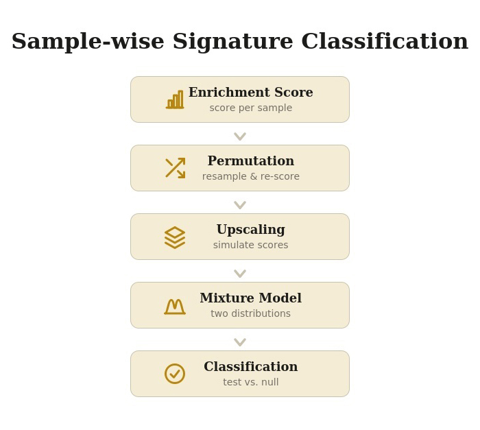
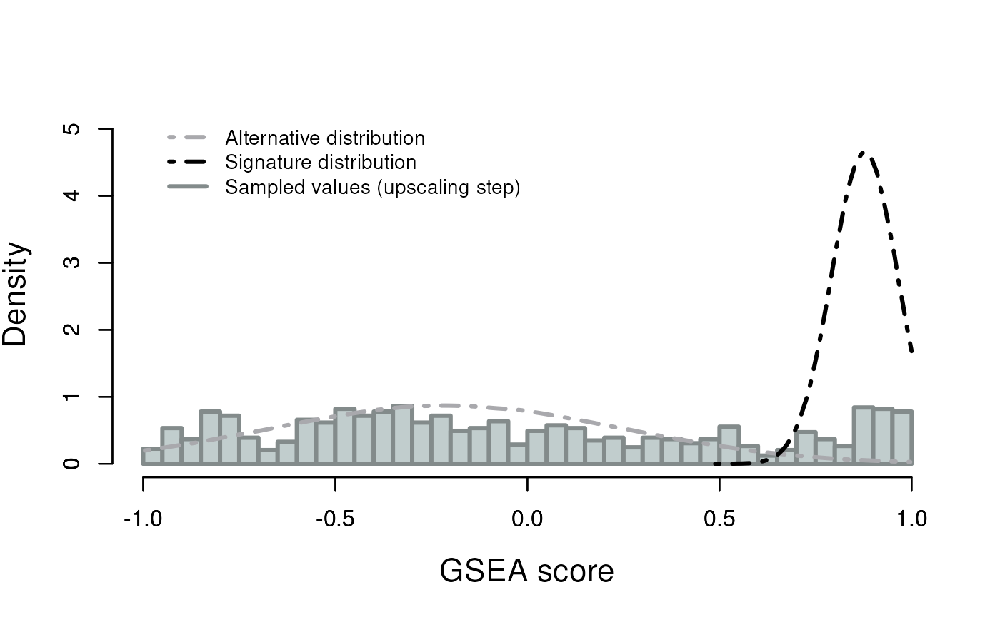
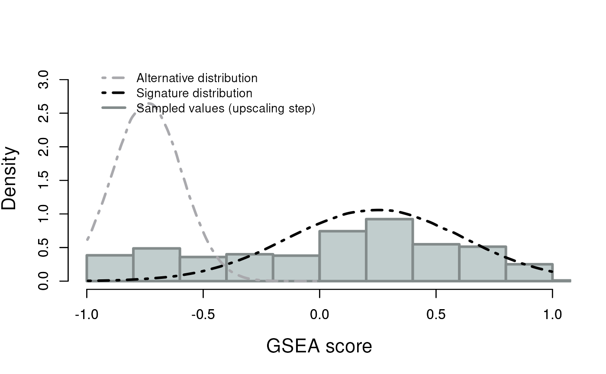

vignettes/splitTypeR.Rmd
splitTypeR.RmdPackage: splitTypeR
Authors: Astrid Deschênes [aut, cre] (ORCID: https://orcid.org/0000-0001-7846-6749), Pascal Belleau
[aut] (ORCID: https://orcid.org/0000-0002-0802-1071)
Version: 0.99.0
Compiled date:
2026-09-30
License: Artistic-2.0
This package and the underlying splitTypeR code are distributed under the Artistic license 2.0. You are free to use and redistribute this software.
If you use this package for a publication, we would ask you to cite the following:
Deschênes A, Belleau P (2026). splitTypeR: Transcriptomic classification using mixture of normal distributions. R package version 0.99.0, https://github.com/adeschen/splitTypeR.
Cancer classification, using RNA sequencing, is now part of modern precision oncology. For some cancers, RNA classification provides deep insights into tumor aggressiveness and growth rates. For example, breast cancer subtypes (like Luminal-A, Luminal-B, HER2-enriched, or Basal-like) help forecast patient outcomes (Cascianelli et al. 2020). The Luminal-A is the most common molecular subtype of breast cancer, making up to 60% of all breast cancer cases. It also is associated with good prognosis. While Luminal-B tumors have a more aggressive phenotype and a worse prognosis (Yersal 2014). Once gene signatures for RNA subtyping become widly accepted by major oncology organizations, they start to classify cancer subtypes, predict patient survival, and guide treatment.
From a research aspect, the classification of new samples using their transcriptional profiles can be done using different tools. For some cancers, machine learning models and dedicated software are available such as the Bioconductor Genefu package for breast cancer molecular subtyping (Gendoo et al. 2016), and the CMScaller package for subtyping of colorectal cancer (Eide et al. 2017).
In the absence of dedicated software, unsupervised clustering with a heatmap visualization to classify transcriptomic samples with a gene signature is often employed. This method is relatively simple and offers an instant visual support. However, this method has a few drawbacks:
The splitTypeR package resolves these issues by providing an automated statistical framework to classify heterogeneous biological samples based on gene signature lists, effectively isolating the signature-positive samples.
This classification method is designed for bulk transcriptomic datasets.
As with any R package, the splitTypeR package should first be loaded with the following command:
This following figure represent the statistical method employ to turn a noisy, single-number enrichment score into a confident binary classification of each sample. In summary, the method builds a confidence interval around the enrichment score, models the cohort as a mixture of two biological states, and then statistically tests each sample against that mixture.

General workflow.
The statistical method is split into 5 steps. Each of those steps are performed for one specific signature at the time. A signature is typically a predefined set of features (transcriptomic expression in this situation) that is associated with some biological state, pathway, or phenotype.
The enrichment scores are first computed for every single sample with the Bioconductor GSVA package (Hänzelmann et al. 2013). Those scores represent the real score for each sample. Later steps treats this real score as the anchor point around which uncertainty gets modeled.
Random subsets of samples, of fixed size, from the full dataset are repetitively drawn. For each of these resampled subsets, the enrichment score for the samples present are recomputed.
This step enables a per-sample uncertainty estimation (standard deviation).
For each sample, a fixed number of simulated enrichment scores are drawn from a normal distribution centered on the real score, using the standard deviation estimated from permutations.
This step enables the upscaling of the total number of values that will be used in the next step.
The synthetic values across all samples are pooled to fit two overlapping normal distributions to them. The two normal distributions are extracted using a mixture model approach implemented in the mixtools package (Benaglia et al. 2009). The idea being that the whole cohort is actually a blend of two underlying populations (a “low enrichment” group and a “high enrichment” group).
For each sample, a hypothesis testing whether its real score is more consistent with belonging to the low-enrichment distribution or the high-enrichment one, and assign it accordingly.
For each sample, the pipeline runs a hypothesis test where the Null hypothesis (H₀) is that the sample actually belongs to the lower-enrichment distribution. The sample’s real enrichment score (from Step 1) is checked against that null distribution. If the real score is implausible under the low-enrichment distribution (i.e., it falls somewhere that distribution would rarely produce), the null hypothesis is rejected. In that situation, the sample is classified as belonging to the higher-enrichment group which implies it is assigned to the tested signature. Otherwise, the samples is not classified.
For this demonstration, we are going to use the published RNA-seq dataset of pancreatic ductal adenocarcinoma (PDAC) patients-derived organoids (PDOs) published in Tiriac et al. (Tiriac et al. 2018). The RNA-seq has been aligned with GENCODE v48 on GRCh38.p14 genome with STAR v2.7.9a (Dobin et al. 2013). Only one PDO per patient was retained. The expected counts were processed with DESeq2 v1.50.2 (Love et al. 2014) on genes expressed in at least 20% of the PDOs. The normalized expression is available in a SummarizedExperiment object.
In PDAC, the basal-like and classical subtypes, as defined in Moffitt et al (Moffitt et al. 2015), are the two consistently employed molecular subtypes. The classical signature is associated to better prognosis and better response to standard chemotherapy while the basal-like subtype is associated with worse overall prognosis O’Kane et al. (2020).
The basal-like and classical gene signatures are the one defined for PDOs in Tiriac et al. (Tiriac et al. 2018).
## Prepare the PDOs basal-like and classical signatures
signaturesList <- list()
signaturesList[["Basal-like"]] <-
getGeneSignatures("2018_Tiriac_PDAC_PDO_basal-like_signature")[[1]]
signaturesList[["Classical"]] <-
getGeneSignatures("2018_Tiriac_PDAC_PDO_classical_signature")[[1]]A matrix of normalized expected counts is required. The row are the genes while the patients (samples) are the columns.
The row annotation must correspond to the signature format. As an example, if the signatures are composed of gene names, the row annotation for the normalized expected counts must also be gene names.
## Loading required package: MatrixGenerics## Loading required package: matrixStats##
## Attaching package: 'MatrixGenerics'## The following objects are masked from 'package:matrixStats':
##
## colAlls, colAnyNAs, colAnys, colAvgsPerRowSet, colCollapse,
## colCounts, colCummaxs, colCummins, colCumprods, colCumsums,
## colDiffs, colIQRDiffs, colIQRs, colLogSumExps, colMadDiffs,
## colMads, colMaxs, colMeans2, colMedians, colMins, colOrderStats,
## colProds, colQuantiles, colRanges, colRanks, colSdDiffs, colSds,
## colSums2, colTabulates, colVarDiffs, colVars, colWeightedMads,
## colWeightedMeans, colWeightedMedians, colWeightedSds,
## colWeightedVars, rowAlls, rowAnyNAs, rowAnys, rowAvgsPerColSet,
## rowCollapse, rowCounts, rowCummaxs, rowCummins, rowCumprods,
## rowCumsums, rowDiffs, rowIQRDiffs, rowIQRs, rowLogSumExps,
## rowMadDiffs, rowMads, rowMaxs, rowMeans2, rowMedians, rowMins,
## rowOrderStats, rowProds, rowQuantiles, rowRanges, rowRanks,
## rowSdDiffs, rowSds, rowSums2, rowTabulates, rowVarDiffs, rowVars,
## rowWeightedMads, rowWeightedMeans, rowWeightedMedians,
## rowWeightedSds, rowWeightedVars## Loading required package: GenomicRanges## Loading required package: stats4## Loading required package: BiocGenerics## Loading required package: generics##
## Attaching package: 'generics'## The following objects are masked from 'package:base':
##
## as.difftime, as.factor, as.ordered, intersect, is.element, setdiff,
## setequal, union##
## Attaching package: 'BiocGenerics'## The following objects are masked from 'package:stats':
##
## IQR, mad, sd, var, xtabs## The following object is masked from 'package:utils':
##
## data## The following objects are masked from 'package:base':
##
## anyDuplicated, aperm, append, as.data.frame, basename, cbind,
## colnames, dirname, do.call, duplicated, eval, evalq, Filter, Find,
## get, grep, grepl, is.unsorted, lapply, Map, mapply, match, mget,
## order, paste, pmax, pmax.int, pmin, pmin.int, Position, rank,
## rbind, Reduce, rownames, sapply, saveRDS, scale, sequence, table,
## tapply, transform, unique, unsplit, which.max, which.min## Loading required package: S4Vectors##
## Attaching package: 'S4Vectors'## The following object is masked from 'package:utils':
##
## findMatches## The following objects are masked from 'package:base':
##
## expand.grid, I, unname## Loading required package: IRanges## Loading required package: Seqinfo## Loading required package: Biobase## Welcome to Bioconductor
##
## Vignettes contain introductory material; view with
## 'browseVignettes()'. To cite Bioconductor, see
## 'citation("Biobase")', and for packages 'citation("pkgname")'.##
## Attaching package: 'Biobase'## The following object is masked from 'package:MatrixGenerics':
##
## rowMedians## The following objects are masked from 'package:matrixStats':
##
## anyMissing, rowMedians
## Load the SummarizedExperiment object
path <- system.file("extdata", "Tiriac_NormExpCounts.RDS", package = "splitTypeR")
se <- readRDS(path)
## Extract the normalized counts and assign the gene names as row names
## The row names should correspond to the information present in the
## gene signatures. In this case, the gene names are used.
normCounts <- assays(se)[["normalizedCounts"]]
rownames(normCounts) <- rowRanges(se)$gene_nameThe runSubtypingBimodal function runs all the steps.
## Fix seed for reproducible results
set.seed(121)
result <- runSubtypingBimodal(geneLists=signaturesList,
expectedCountsMatrix=normCounts,
permRatio = 0.75,
permNbr = 15,
upscaleNbr = 25)## number of iterations= 93
## number of iterations= 142
ee<- splitTypeR::plotDensityWithUpscalingSamplesBimodal(breaks = 32L,
signature="Basal-like", result)
splitTypeR::plotDensityWithUpscalingSamplesBimodal(breaks = 14L,
signature="Classical", result)
Claude Sonnet 5 was used for improving the workflow figure. It was also use for proofreading and copyediting sections of this text.
Here is the output of sessionInfo() on the system on
which this document was compiled:
## R Under development (unstable) (2026-09-29 r90598)
## Platform: x86_64-pc-linux-gnu
## Running under: Ubuntu 24.04.4 LTS
##
## Matrix products: default
## BLAS: /usr/lib/x86_64-linux-gnu/openblas-pthread/libblas.so.3
## LAPACK: /usr/lib/x86_64-linux-gnu/openblas-pthread/libopenblasp-r0.3.26.so; LAPACK version 3.12.0
##
## locale:
## [1] LC_CTYPE=en_US.UTF-8 LC_NUMERIC=C
## [3] LC_TIME=en_US.UTF-8 LC_COLLATE=en_US.UTF-8
## [5] LC_MONETARY=en_US.UTF-8 LC_MESSAGES=en_US.UTF-8
## [7] LC_PAPER=en_US.UTF-8 LC_NAME=C
## [9] LC_ADDRESS=C LC_TELEPHONE=C
## [11] LC_MEASUREMENT=en_US.UTF-8 LC_IDENTIFICATION=C
##
## time zone: UTC
## tzcode source: system (glibc)
##
## attached base packages:
## [1] stats4 stats graphics grDevices utils datasets methods
## [8] base
##
## other attached packages:
## [1] SummarizedExperiment_1.43.0 Biobase_2.73.2
## [3] GenomicRanges_1.65.4 Seqinfo_1.3.2
## [5] IRanges_2.47.5 S4Vectors_0.51.10
## [7] BiocGenerics_0.59.12 generics_0.1.4
## [9] MatrixGenerics_1.25.0 matrixStats_1.5.0
## [11] splitTypeR_0.99.0 knitr_1.52
## [13] BiocStyle_2.41.0
##
## loaded via a namespace (and not attached):
## [1] DBI_1.3.0 GSEABase_1.75.0
## [3] rlang_1.3.0 magrittr_2.0.5
## [5] otel_0.2.0 compiler_4.7.0
## [7] RSQLite_3.53.3 DelayedMatrixStats_1.35.0
## [9] png_0.1-9 systemfonts_1.3.2
## [11] vctrs_0.7.3 stringr_1.6.0
## [13] pkgconfig_2.0.3 SpatialExperiment_1.23.0
## [15] crayon_1.5.3 memuse_4.2-3
## [17] fastmap_1.2.0 magick_2.9.1
## [19] XVector_0.53.0 rmarkdown_2.32
## [21] graph_1.91.0 ragg_1.5.2
## [23] purrr_1.2.2 bit_4.6.0
## [25] xfun_0.61 cachem_1.1.0
## [27] jsonlite_2.0.0 blob_1.3.0
## [29] rhdf5filters_1.25.4 DelayedArray_0.39.7
## [31] Rhdf5lib_2.1.0 BiocParallel_1.47.0
## [33] parallel_4.7.0 R6_2.6.1
## [35] stringi_1.8.9 bslib_0.12.0
## [37] RColorBrewer_1.1-3 jquerylib_0.1.4
## [39] Rcpp_1.1.2 bookdown_0.48
## [41] GSVA_2.7.17 mixtools_2.0.0.1
## [43] BiocBaseUtils_1.15.1 Matrix_1.7-6
## [45] splines_4.7.0 tidyselect_1.2.1
## [47] abind_1.4-8 yaml_2.3.12
## [49] codetools_0.2-20 lattice_0.23-1
## [51] tibble_3.3.1 KEGGREST_1.53.6
## [53] S7_0.2.2 evaluate_1.0.5
## [55] survival_3.8-12 desc_1.4.3
## [57] kernlab_0.9-33 Biostrings_2.81.9
## [59] pillar_1.11.1 BiocManager_1.30.27
## [61] plotly_4.12.1 ggplot2_4.0.3
## [63] sparseMatrixStats_1.25.0 scales_1.4.0
## [65] xtable_1.8-8 glue_1.8.1
## [67] tools_4.7.0 data.table_1.18.6.1
## [69] annotate_1.91.0 fs_2.1.0
## [71] XML_3.99-0.25 rhdf5_2.57.18
## [73] grid_4.7.0 tidyr_1.3.2
## [75] AnnotationDbi_1.75.2 SingleCellExperiment_1.35.2
## [77] nlme_3.1-171 HDF5Array_1.41.3
## [79] cli_3.6.6 textshaping_1.0.5
## [81] segmented_2.2-2 S4Arrays_1.13.1
## [83] viridisLite_0.4.3 dplyr_1.2.1
## [85] gtable_0.3.6 sass_0.4.10
## [87] digest_0.6.39 SparseArray_1.13.3
## [89] rjson_0.2.23 htmlwidgets_1.6.4
## [91] farver_2.1.2 memoise_2.0.1
## [93] htmltools_0.5.9 pkgdown_2.2.0
## [95] lifecycle_1.0.5 h5mread_1.5.3
## [97] httr_1.4.9 MASS_7.3-66
## [99] bit64_4.8.6